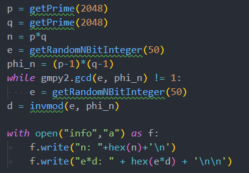
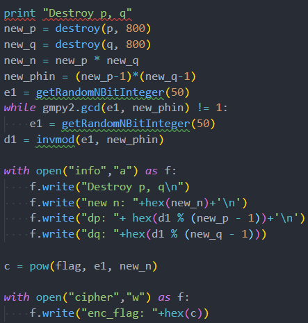
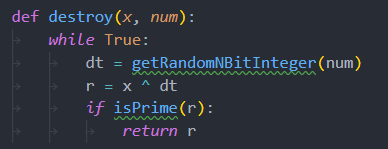
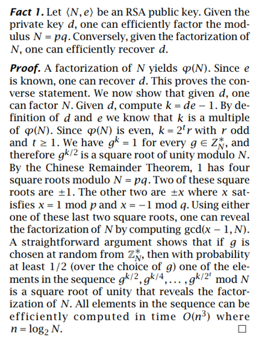

首先是一个常规的RSA密钥生成，给出的信息是n和e*d，这边其实可以直接根据这两个信息求出p和q。

然后是对前面的p和q进行了一个destroy操作，生成了两个新的p和q，再用这两个新p和q进行RSA加密。
再看一下destroy：

实际上就是修改输入数的低位，直至生成一个新的质数。
另外还给出了new_n, dp, dq, c。

根据此方法，可以直接根据ed和n求出p和q：
x1def gcd(a, b):2 if a < b:3 a, b = b, a4 while b:5 a, b = b, a % b6 return a78n = 0x7876a540f245042663ad66dc19be6714d986f497b2556337b51254d10f503e550076338299765d8afed0df95ac5a0ed57debacd6c7efece0792a0ff5446deec0c4b674b3ead84d23e68e942eac745341d6042519fdf1327c45180ad2683df91625830c05824eaae697e9a620289bd00631207e245f7d55b09bca405f302cbd89f3f9baed871a616ce4c2764c194777b2b516b6ddbbd84daf37a5b46c4b24017b5aca61ef8b6b996910b9504401f0d339d79190ccdcf5176c02c3903e866a02ce75ad3951eecf6b770fed7bd5d5e6e2db3bb6accdf21d9d7ed453bb36b7f35bb9af6e4521e4722625de7f1502544308c9d73fb09fe664d0c8105f75f555bce1ae956a3a6892573d00f5fa5eda68a8a67dc5517d471f9f55925dfe31a907f2bc4b68442690d7ef64f1840ed6862624a7a2d1564415fa82ad9a1aedfe08ea403413f60dadedebd448e8d33d663ec6b4529f1e787f7a0a2293d0d64ed13b57d84d7ddb5943cc74a1871abe8aeef50cadb9c913da012dd6fb74ba1457604c35326ded639deed97187fd513ac8f664160e1ce5896d80a0b224391ebd733a74bd2c204956758d32c719873a9e265f47fa1d5bd1552019eec0893b90cd2933b770155638b8c7322eefd3bdaeef21c52de9def334f1a2b48bddc70c2c7b2bd3f4205cfbabe8d8d816f06e56a1367726cfb3494f32cc65e6749d6523ff5cfc0574e063b4dd9ed = 0x4f587a8738b4b328db1d1a8faa2093d66cc125977d6091594c829248faa3790e3f452877e3d60a60d795d8f4edb18099cb2278431bc96348944dedbde765619785297ff5cfa25679588cbfc7d307d66f0fcf8851597a8016b2b5d675d542748c9b1b4c5d3195d300fa85eae857243194c9c9f9851fecbec38bdd0d655a1a4e096b265aae1f3ae3c2270c05150f5cbbd73e9c207d9b8634bcecc63d7f023337797a9bedc3ec6519dcb2274eee64fc7fe2d1ca1b61ca88b000fc98e61bfe512439da861104a5c54fedc1f5c3d1efd54c03cb87035671fd00075f6e7381b5402961f14afbf1fa84e3fc20938ce48993af2e0da228a4ec584562ce09060cb1cc2c908d7c53ce70e6b8b3c1c54e2187361d603e8c369c5765b8056f5c6fff5e3b17e3d5efa36b1bf5fb527cd256a436d8a41fd68ede875fafa74b167bdbe41fbdb3c3980ceb54fbac1e353537ef0bbb03b150f87a1447029b7525a2e08c6e9e566a911b8a3c378b7b34d10f442b653c1085e61bd66f56c501bb6ab55f1485b2eb706bc22ad3c5d54cbd3ec3718c615eb914a58f59338caeebd5f772daff783e99272e51ad94d66be6544c79e8f0b9d225bda7d3d484aee8e6d21f98d6975e2e8819a5eecdadcb4a4bffc856d140a70c455f5f91a77c4bf462506da3b614ea9baf1c3c4f43261d9b0b25815d250e0ff470e177418c6751ba55701d472e446b7300316a619ccf36392110k = ed-111x = pow(2, k // 16, n)12assert x != 11314p = gcd(x-1,n)15q = n // p16print(p,q)17# p = 2016335192014996216107634338456658957133764844843505647331302386417866055837943623314023123431447175990815061992261496914728057093739204686378018119978317767050352953576122469145752207779621928469083119210159733291591357367141505191455139686605917008113935285116752887831931475503331589606339720861882555120945244958571037674736638721436539848768252733378104586434683643505289401698139647506662373724427952492948145643178763838001376322350028235341267056824368316597186352006899486857577592111334218950526986584563097597874684346921334750168519061212713376248409899549494932481137206815223216282619967944509151534101718# q = 24373330295460161087568801749142631463412306620232981165513644626012898530073799284266535697205136762522714652892503907874729556022866329075348943973526179464613326298767918220959886719798170181842951575113313712972334259067374189425732310582551475394324501436606142865237866381864747526943557557049810877098184716274116324606129037704797070018537344588773368840744242700825058038711962231704729623496781931848747471456018357537049635815881233487430321333920399523304051773597138133490711060267016467147373707709953647125476147927180399646046273677944542227249832519018552570098868339299623892190210829066096895400357这边注意到p和q的位数是2048位，而destroy则是改变了p和q的低800位，因此联想到coppersmith定理攻击:
xxxxxxxxxx201p4 = 201633519201499621610763433845665895713376484484350564733130238641786605583794362331402312343144717599081506199226149691472805709373920468637801811997831776705035295357612246914575220777962192846908311921015973329159135736714150519145513968660591700811393528511675288783193147550333158960633972086188255512094524495857103767473663872143653984876825273337810458643468364350528900000000000000000000000000000000000000000000000000000000000000000000000000000000000000000000000000000000000000000000000000000000000000000000000000000000000000000000000000000000000000000000000000000000000000000000000000000000000000000000000002n = 0x7876a540f245042663ad66dc19be6714d986f497b2556337b51254d10f503e550076338299765d8afed0df95ac5a0ed57debacd6c7efece0792a0ff5446deec0c4b674b3ead84d23e68e942eac745341d6042519fdf1327c45180ad2683df91625830c05824eaae697e9a620289bd00631207e245f7d55b09bca405f302cbd89f3f9baed871a616ce4c2764c194777b2b516b6ddbbd84daf37a5b46c738af2d859647359cfbb8153c4ab10a125d003c857e7b5d2f82e7e54758e3f2004e1ef3e57a36dc494ba669fc24b3e5c4d3690e8b756c1edea9787ad674d7d21a1df994a3ea89150315646ef346fe2ee0e88eb3e31fff2b78db7935c18af78fd11b36c20157a62da09fa3a1ef241e5d187b0275d247341ac5efbf24317ac1f30a9d4c363ba44b8d56f39054189bd7917ea49058d7296d5526caa57d530a761e854fa4748e524fd0704d5271316cc88447fcaa13247d689fc9987d7fb452fdf83105e5284824d3cd19b2540d7652e1a267ff280cba5f019ebfaa09c2f0e0cf3aed3557dba24949659773aac9f478f190f5a702058a30aba52ad8cc7adf852924a05c5aa64ced2120fe3f528721ba698ab18ba87df8434b1046990386c66d5a088e7256d0b00a24bae99d01298443ded2fb431cd089920e994d5a56dd63418f2d4769be179cf66d5c0b9e1e862978cb32d802f297c9cfdebe3fd308b43ed3f47de69f55d9d34pbits = 20485kbits = 8006#print p4.nbits()78PR.<x> = PolynomialRing(Zmod(n))910f = x + p411x0 = f.small_roots(X=2^kbits, beta=0.4)[0]12print "x: %s" %hex(int(x0))13p = p4+x014print "p: ", hex(int(p))15assert n % p == 016q = n/int(p)17print "q: ", hex(int(q))18# x: 0x4b0e6e36e1cc2dc871cbaba9a1ba6efe92a090065cb7fd2ff1dda1ec1032f44ff5280d2c277d408649e9babaf1b4da0bb8ee4647fbbbce2bf9fbbda4588ea6af93b45cfdae1d7ce777fbc7f537c37ffc43d40d8edf200e326a9310d9f62cdeb9d107e7e5L19# p: 0x9fb979c15eac67a735351819d278355daf31a820e76357b6e7f33b5d21edc49bea802be81ae7b70a43312af1aa2dd3ffa70ace068aa7ae845b1d3d3644bbd14dd2c4f51070f7d09bde75c2d1b686f28b488b7bda30476346df6b4574b412836e221b325821f55445d867e6256d22d2de131ee9706b02bcccb380e8c6ae0219a7311ddccad79e5dde6bb88a0413b3e0e1bd5fffc46cfc3c8787e5262351b073cbbd16bd4eb88ac6e82c2c31ca96fad148ea8b62c5b642ce3dec0a9a3817ce27517d94b66c15d2c98fd9e141aa4f3e0165c644048aaaccd017d3363669ce53b9c985f77ce777fbc7f537c37ffc43d40d8edf200e326a9310d9f62cdeb9d107e7e5L20# q: 0xc112ef7c1fb76293179886e09d24dd1c2f039121ffcdeaffbbf0321f7c0643d8ccd5de12af6d8768b2dfb2721e6c876a598bcd6987ebb29798e7d7d3e1db9a7da655ca5ce6845263b5bc3423e34226fa96e371086b1cbfdaa8ae7a1d56b0b5a0897132a749b8fd1410b513b29c8225ac6fc588ae0d8e327c4be51d894b6d92a4b9e06a27a11df3d512fd2c3eb8775863c9cd85b1d3c60e9870c62179a1a4e3b17560a28eee5b9cd7e3bf76e250468aba3df93f6ff2711cb2aa39c94995e16ab862390c9717cb212b9f2d8c3c9930161c9ce675b75fc6a012d4fb07785d5d74a2a89cd97908c86c99b0117b14e10fb9fa878a357e3a8a819e7bb7047e8884d359L这样就求出了new_p和new_q。
现在，要解密的话,m=pow(c,d1,new_n)，需要知道d1。但是这边的e1是重新随机生成的，基本上不可能算出来，所以需要根据别的关系求出d1。
注意到给出的dp和dq满足下列关系：
xxxxxxxxxx21dp = d1 mod new_p-12dq = d1 mod new_q-1
其中dp,dq,new_q,new_p
均为已知，可以利用中国剩余定理来算出d1：
xxxxxxxxxx191def GCRT(mi, ai):2 assert (isinstance(mi, list) and isinstance(ai, list))3 curm, cura = mi[0], ai[0]4 for (m, a) in zip(mi[1:], ai[1:]):5 d = gmpy2.gcd(curm, m)6 c = a - cura7 assert (c % d == 0)8 K = c / d * gmpy2.invert(curm / d, m / d)9 cura += curm * K10 curm = curm * m / d11 return (cura % curm, curm) #(解,最小公倍数)1213d1 = int(GCRT([p-1,q-1],[dp,dq])[0])1415# 解密16m=pow(c,d1,n)17long_to_bytes(m)1819#flag{768da12f-32ca-4c7e-ac23-672a2cdcc3e2}得到flag:flag{768da12f-32ca-4c7e-ac23-672a2cdcc3e2}
这道题，我拿了三血。实际上很快我就求出了new_p和new_q，但是一直卡在python的中国剩余定理实现代码，在网上找到的代码基本上都是只适用于模数是互质的情况，但这里显然不满足，两个模数都是偶数，肯定不互质，后来终于找到了一个不是互质的代码，算出了flag。
可以说，这道题融合了3种RSA的攻击方法，能够将前面学到的东西融会在一起。而且第一种方法，正是我这段时间正在思考的一个：仅利用e和d解密RSA。所以看到给出了n和ed的那一刻，我就大概知道怎么做了。